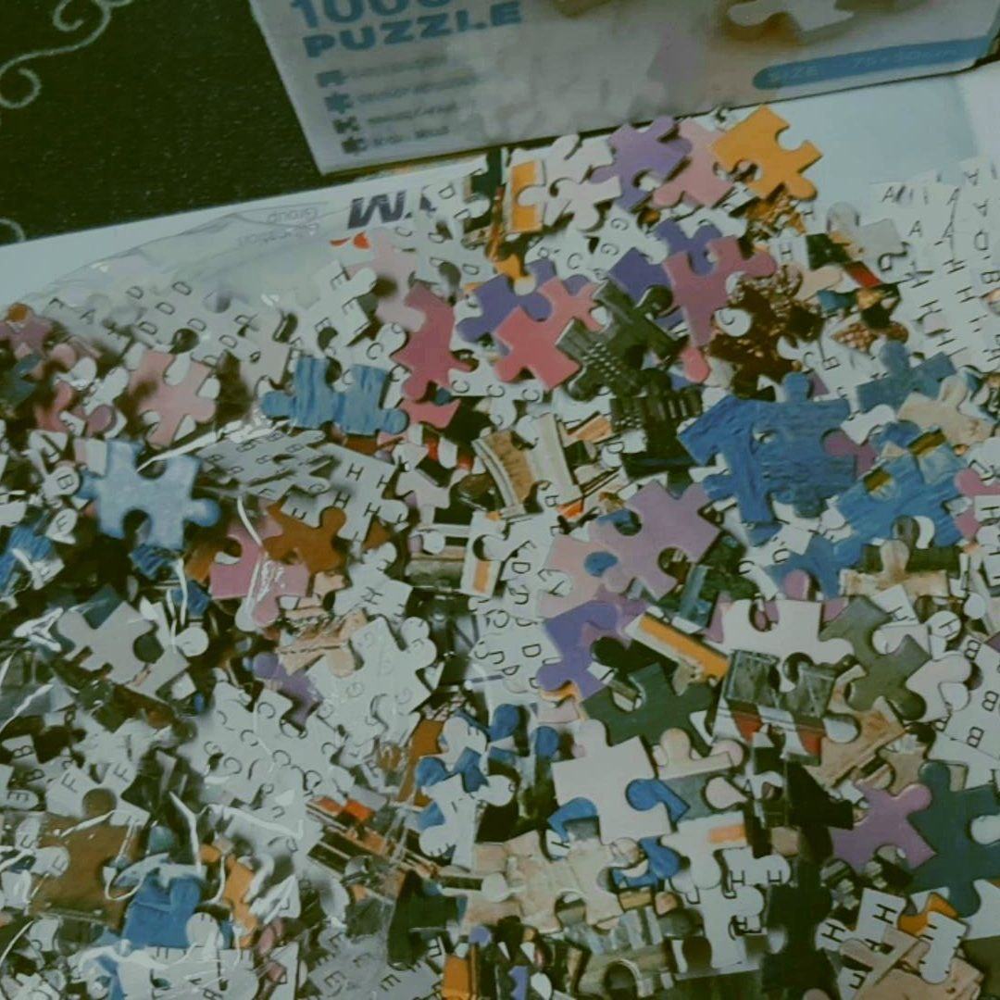
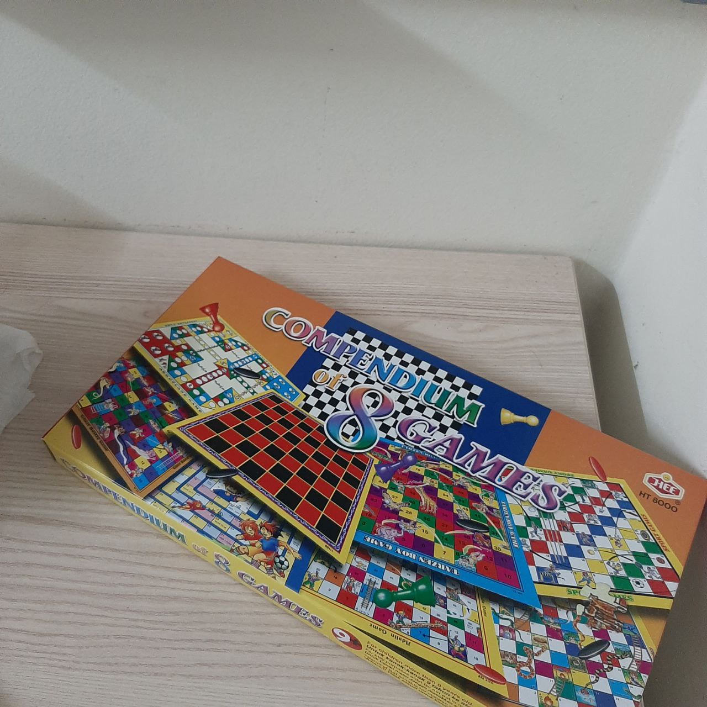
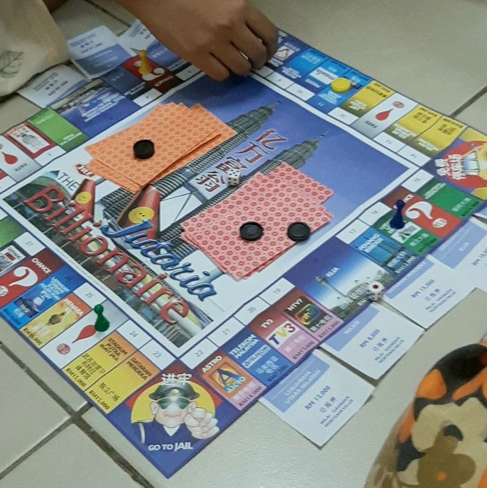

•WELCOME TO NATASHA'S BLOG! •
Yes, of course, listening to music is a hobby and is probably one of the best hobbies we can think of. It has been scientifically proven to have innumerable benefits for our health and is just as enjoyable as any other hobby. Engaging in MUSIC releases dopamine which is known as a feel-good chemical and causes us to experience emotions such as happiness and joy.
Besides listening to music as a hobby, I also enjoy playing board games. I have a multiple board games such as monopoly, checkers, ludo and puzzles. Surprisingly, what board games can do for families is by bringing them together (as well as for friendships!).
There are other various hobbies that I enjoy doing. Hobbies are a great way to disconnect from work and break away from the monotony of daily schedules. Regardless of which hobby you choose, the benefits of engaging in that hobby will likely surprise you. :D